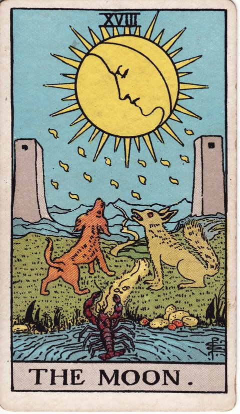

메이저 아르카나 · 타로 카드 백과사전
달 (The Moon)

정방향
키워드: 막연한 불안 · 흐릿한 진실 · 무의식의 신호 · 짙게 낀 안개 · 알 수 없는 두려움 · 속내를 가린 그림자
조언: 눈에 보이는 것만으로 판단하기 어려우니 무의식이 보내는 신호에도 주의를 기울여보세요.
연애운
솔로
상대의 마음을 확신할 수 없어 괜한 불안에 시달릴 수 있는 시기입니다. 확신이 서지 않는다면 서두르지 말고 시간을 두고 지켜보세요.
커플
말하지 않은 오해가 쌓이며 관계에 막연한 불안이 커질 수 있습니다. 쌓인 오해를 그대로 두지 말고 솔직한 대화로 풀어보세요.
재물운
소비
불확실한 정보로 소비 판단이 흐려질 수 있는 시기입니다. 확신이 서지 않는다면 결정을 잠시 미뤄보는 것도 방법입니다.
투자
불투명한 정보 속에서 투자 판단을 내리기 어려운 시기입니다. 여러 출처의 정보를 교차로 확인하며 신중하게 접근해보세요.
취업운
구직
결과를 알 수 없어 불안한 마음으로 기다려야 하는 시기입니다. 기다리는 동안 다른 지원 준비를 함께 진행해두는 것도 좋습니다.
이직
상황이 명확하지 않아 불안한 마음으로 지내는 시기입니다. 불확실함이 크더라도 지금 할 수 있는 것에 집중해보세요.
직장운
팀워크
팀 내 분위기나 상황이 불명확해 불안한 마음이 들 수 있는 시기입니다. 불명확한 분위기라면 직접 확인해보는 것이 마음을 편하게 합니다.
개인성과
맡은 업무의 우선순위를 잡기 어려워 갈피를 못 잡을 수 있는 시기입니다. 상사나 동료에게 우선순위를 먼저 확인해보는 것이 좋습니다.
사업운
창업준비
시장 분위기를 정확히 읽기 어려워 창업 판단이 자꾸 흔들리는 시기입니다. 성급히 결정 내리기보다 발품을 팔아 자료를 더 모아보세요.
운영중
겉으로 드러난 숫자만으로는 사업 방향을 섣불리 판단하기 힘든 시기입니다. 소문보다 실제 데이터를 확인하는 습관이 필요합니다.
학업운
시험준비
막연한 불안감이 집중력을 떨어뜨릴 수 있는 시기입니다. 불안감에 흔들리지 말고 눈앞의 공부에 집중해보세요.
진로고민
진로에 대한 막연한 두려움으로 혼란스러울 수 있는 시기입니다. 두려움의 실체를 구체적으로 적어보면 오히려 선명해질 수 있습니다.
건강운
신체
원인 모를 컨디션 난조나 불안이 이어질 수 있는 시기입니다. 원인을 알 수 없더라도 꾸준히 몸 상태를 살펴보세요.
정신
근거 없는 불안감이 마음을 흔들 수 있는 시기입니다. 무엇이 불안한지 구체적으로 적어보면 막연함이 줄어들 수 있습니다.
대인관계운
새로운 인연
새로운 사람의 속마음을 파악하기 어려워 조심스러워지는 시기입니다. 판단을 서두르기보다 여러 상황에서 지켜보며 천천히 알아가보세요.
기존 관계
가까운 사람들과 서로 말하지 않은 서운함이 쌓이며 거리감이 느껴질 수 있는 시기입니다. 짐작만으로 넘겨짚지 말고 직접 마음을 물어보는 것이 좋습니다.
명예운
근거 없는 소문으로 평판이 불안정해질 수 있습니다. 소문의 진원지를 파악해 직접 해명하는 것이 오해를 줄여줍니다.
이사운
이동 여부를 확신하지 못해 불안한 시기입니다. 마음이 편해지는 쪽으로 조금씩 마음의 무게를 실어보세요.
자식운
아이의 속마음을 알 수 없어 불안해지는 시기입니다. 다그치기보다 편하게 이야기할 수 있는 분위기를 먼저 만들어주세요.
역방향
키워드: 걷히는 안개 · 드러나는 진실 · 가라앉는 두려움 · 밝혀지는 실체 · 선명해지는 시야 · 누그러지는 긴장
조언: 두려움의 실체를 마주하고 나면 생각보다 별것 아니었다는 걸 깨닫게 될 수 있어요.
연애운
솔로
오해가 풀리며 상대의 진심이 서서히 명확해지는 시기입니다. 짐작만 하지 말고 이제는 직접 마음을 확인해봐도 좋습니다.
커플
쌓여있던 오해가 풀리며 관계가 서서히 명확해지는 시기입니다. 이 기회에 그동안 참아왔던 서운함도 솔직하게 꺼내보세요.
재물운
소비
혼란스럽던 재정 상황이 서서히 명확하게 정리되기 시작합니다. 정리된 김에 가계부나 지출 기록을 새롭게 세워보세요.
투자
가려져 있던 투자 정보의 실체가 서서히 드러나는 시기입니다. 드러난 정보를 바탕으로 포트폴리오를 다시 점검해보세요.
취업운
구직
불확실했던 채용 상황의 실체가 서서히 드러나기 시작합니다. 상황이 파악된 만큼 다음 지원 전략을 구체적으로 세워보세요.
이직
혼란스러웠던 상황의 실체가 서서히 드러나기 시작합니다. 드러난 사실을 바탕으로 이직이나 전환 시점을 다시 저울질해보세요.
직장운
팀워크
팀 안에서 있었던 일의 전후 사정이 점차 또렷하게 정리되는 시기입니다. 그동안 오갔던 이야기를 팀원들과 투명하게 맞춰보며 대응해보세요.
개인성과
불명확했던 업무 방향이 서서히 명확해지는 시기입니다. 상사에게 방향을 다시 한번 확인받으면 더 확실해질 수 있습니다.
사업운
창업준비
그동안 안 보이던 시장의 민낯이 하나둘 드러나기 시작하는 시기입니다. 낙관적으로만 봤던 부분이 있다면 지금 냉정하게 재검토해보세요.
운영중
안개처럼 흐릿했던 사업 상황이 이제야 또렷한 그림으로 잡혀가는 시기입니다. 정리되는 흐름을 놓치지 말고 조직에도 명확히 공유해주세요.
학업운
시험준비
흐릿했던 이해가 서서히 명확해지는 시기입니다. 이해가 확실해진 부분부터 실전 문제로 점검해보세요.
진로고민
막막했던 진로에 대한 안개가 서서히 걷히는 시기입니다. 걷힌 시야를 바탕으로 오늘 구체적인 계획 하나를 세워보세요.
건강운
신체
몸의 문제였던 원인이 서서히 밝혀지는 시기입니다. 원인을 알게 된 만큼 전문가와 함께 구체적인 대응을 시작해보세요.
정신
막연했던 불안의 실체를 알게 되며 마음이 진정되는 시기입니다. 실체를 안 이상 더 이상 혼자 끙끙 앓지 않아도 됩니다.
대인관계운
새로운 인연
새로 알게 된 사람에 대해 막연히 품었던 경계심이 서서히 누그러지는 시기입니다. 처음의 어색함을 걷어내고 조금 더 편하게 다가가봐도 좋습니다.
기존 관계
가까운 사람과의 서먹함이 서서히 풀리며 사이가 다시 편해지는 시기입니다. 다시 예전처럼 편하게 연락을 주고받아도 좋은 시기입니다.
명예운
오해가 풀리며 평판이 서서히 명확해지는 시기입니다. 오해를 만들었던 상황을 주변에 직접 설명해두면 회복이 빨라집니다.
이사운
불확실했던 이동 상황이 서서히 명확해지는 시기입니다. 미뤄뒀던 계약이나 서류 절차를 지금 진행해도 좋습니다.
자식운
아이에 대한 오해가 서서히 풀리는 시기입니다. 오해가 있었다면 아이에게도 솔직하게 마음을 표현해보세요.
같은 슈트: 바보 · 마법사 · 여사제 · 여황제 · 황제 · 교황 · 연인 · 전차 · 힘 · 은둔자 · 운명의 수레바퀴 · 정의 · 매달린 사람 · 죽음 · 절제 · 악마 · 탑 · 별 · 달 · 태양 · 심판 · 세계
홈에서 직접 카드 뽑아보기 ↗